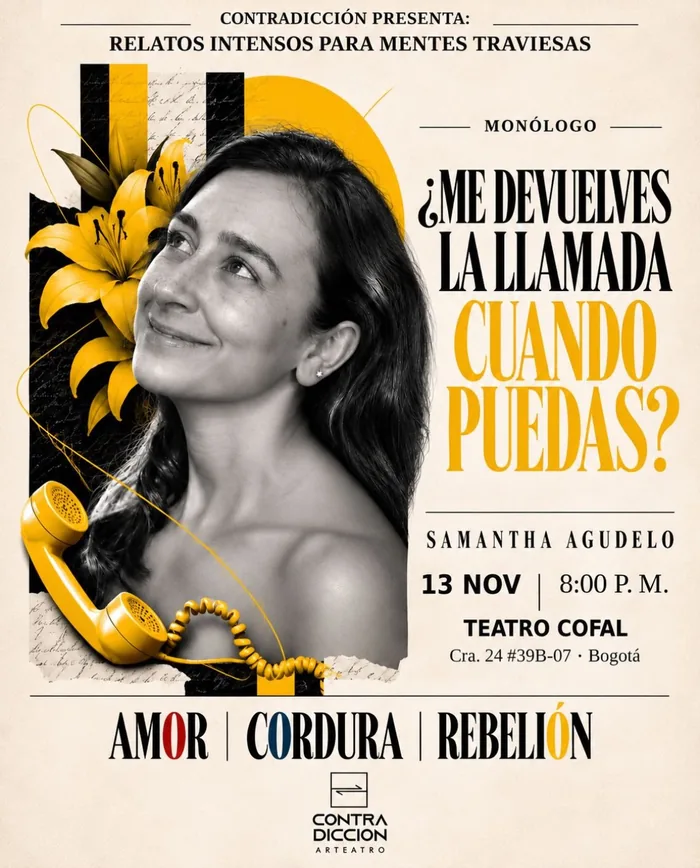
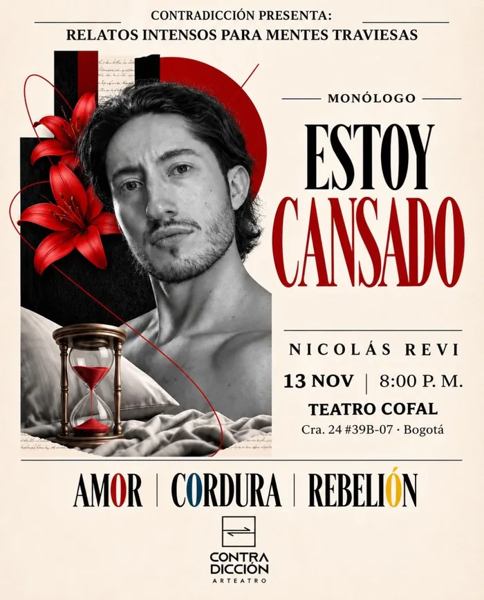
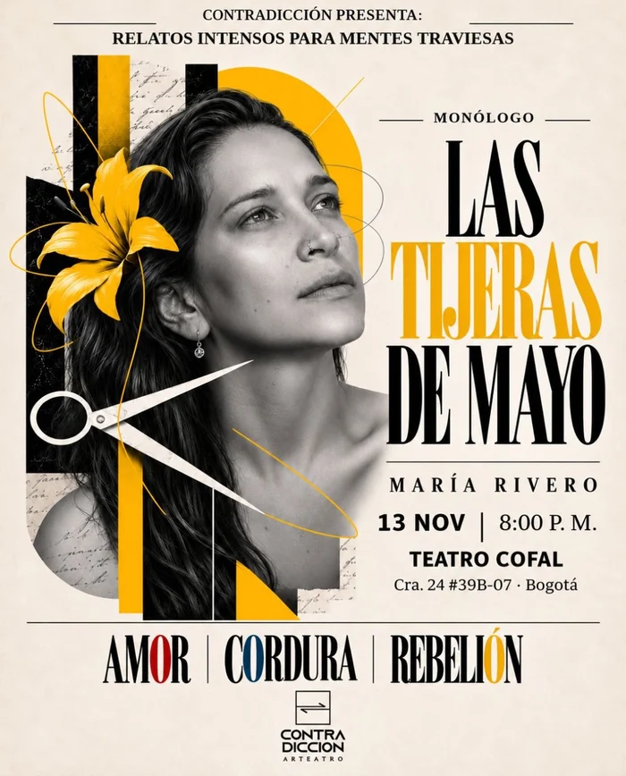
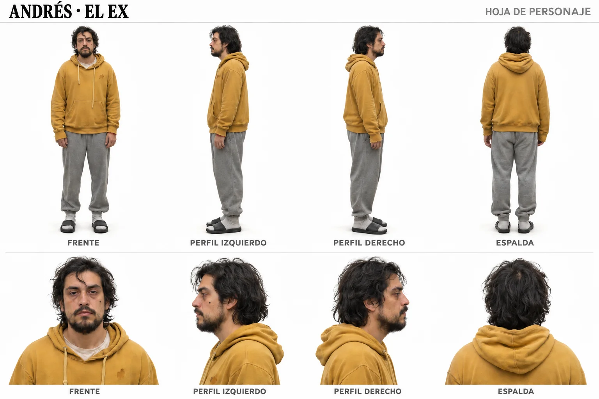

1 · con Natalia
La llamada
El celular pegado a la oreja
«Nata, vuelve, yo cambio…»
¡M*rica, ya!Que mañana madrugo.



Lo construimos con la función del 13 de noviembre en Casa Teatro Cofal, sus redes y datos de Bogotá.
Quién va a ver monólogos, dónde vive su plan y qué nos dicen los datos de Bogotá.
De cada 100 que van a teatro: 51 mujeres y 49 hombres
Cálculo propio con datos de la Secretaría de Cultura, Recreación y Deporte [SCRD] (2025)Casas adaptadas con cafés, librerías, bares y teatros sobre un separador arborizado.
Negocios de dueños independientes y de precio medio: ninguna marca de lujo.
Antes o después de la función, la gente come o toma algo en la zona.
Conteo propio en un radio de 700 m (OpenStreetMap, 2026)de los bogotanos pagó por teatro, danza o circo en el último año. Pocos pagan por ver teatro: quien lo hace ya está dispuesto a comprar boleta
Cálculo propio con datos de SCRD (2025)de los bogotanos fue a teatro en los últimos 12 meses (cine 41,2 %, música en vivo 39,9 %)
SCRD (2025), como se citó en Radio Nacional de Colombia (s. f.)de quienes no fueron dice que no tuvo tiempo por el trabajo o el estudio: es la barrera principal
SCRD (2025), como se citó en Radio Nacional de Colombia (s. f.)de un salario mínimo cuesta una boleta ($35.000 a $50.000)
Precios: Tickean (2026) y Kiosko Teatral (2024); salario mínimo: Decreto 1469 de 2025Profesionales de 25 a 35 años, de clase media, que salen del trabajo buscando un plan distinto: una función y algo para comer o tomar en el Park Way.
Hombres y mujeres por igual · 3 a 4 salarios mínimos · no son expertos en teatroLas 7 emociones básicas (Ekman, 1992; Ekman y Cordaro, 2011), como en el ejercicio de Huggies: Alegría, Tristeza, Furia, Temor, Desagrado, Sorpresa y Desprecio.
Momento a momento: la emoción básica que aparece y el sentimiento que deja.
Duda («¿será aburrido?») y curiosidad: son estados, no emociones.
Monólogo 1 de 4 · «¿Me devuelves la llamada cuando puedas?», de Samantha Agudelo. Una mujer salta entre su infancia, su adolescencia y una cita médica que le cambia la vida.
Por esos saltos en el tiempo, al principio la gente se confundió.
Monólogo 2 de 4 · «Estoy cansado», de Nicolás Revi. Un actor hace una audición y cuenta la noche en que conoció a alguien que le cambió la vida, mientras el director lo interrumpe una y otra vez.
El público se rió con esas interrupciones del casting.
Monólogo 3 de 4 · «Manual para superar la muerte de tu madre», de Mayra Alejandra Frade. Una coach vende un manual de cuatro pasos para superar el duelo, hasta que se quiebra: ella tampoco lo ha superado.
La gente pensó en alguien que perdió.
Monólogo 4 de 4 · «Las tijeras de mayo», de María Rivero. Una mujer se presenta como en una entrevista de trabajo y su hoja de vida deja ver que fue detenida en los años setenta.
El público recordó la historia del país y se incomodó.
Admiración por los artistas: salen conversando.
Pasa por todo en una sola noche: se ríe, se conmueve, se incomoda y aprende. Lo que más valora es salir con algo que contar.
Si el plan es claro, fácil y completo, y promete algo distinto, le gana al cansancio y a la rutina.
Todo el punto 1 en una sola persona, contado como su historia.
Tiene 29 años, vive en el noroccidente de Bogotá y trabaja en una oficina en el centro-norte. Gana unos tres salarios mínimos y prefiere gastar en planes antes que en cosas.
Su vida es reuniones, pantalla y trancón. Cuando tiene una noche libre quiere salir… pero no al bar ni al cine de siempre.
Le gusta el Park Way: le queda cerca del trabajo y tiene dónde comer, tomar algo y algo distinto para ver. No es experta en teatro ni le interesa parecerlo.
Se entera por historias de Instagram y por el voz a voz. Y se pregunta:
Natalia no existe, pero es la cara de la mayoría del público: el que viene, recomienda el show y vuelve.
Un insight poderoso, con el método de clase: «¿si ha visto cuando…?», «¿qué pasaría si…?», emociones, miedos e insights.
Del punto 1 salen 8 situaciones; cada «qué pasaría si» responde a la del mismo número.
…sale de una obra aplaudiendo con cara de experta y, ya en la calle, le pregunta en voz baja a la amiga «¿y tú sí entendiste?»?
…la marca le recordara que ya es experta en monólogos: se ha aguantado el de su ex, el del amigo y el del jefe, y los entendió todos?
…para ir a cine solo pregunta «¿a qué hora?», pero para ir a teatro pregunta «¿de qué se trata?, ¿es chistosa?, ¿sí vale la pena?»?
…en vez de una sinopsis, la marca le respondiera sus tres preguntas en una sola frase: «Es como cuando un amigo te cuenta su tusa… pero chistoso y sí vale la pena»?
…pregunta «¿qué hacemos hoy?» y, después de mil propuestas, terminan otra vez en el bar de siempre, oyendo al amigo borracho hablar de su ex?
…justo cuando el amigo arranca otra vez con su ex, la marca le diera al grupo una salida: una noche en la que el monólogo sí lo escogen ellos?
…le responde una historia de Instagram a un amigo con un «¿y eso dónde es? ¡Lléveme la próxima!»?
…en cada función dejáramos una silla vacía con un letrero, «Reservada para el que siempre dice "lléveme la próxima"», y la publicáramos en Instagram?
…se oye completo el audio de 10 minutos del amigo que no supera a su ex, pero dice que un monólogo le da pereza?
…le mostráramos a todo el mundo ese audio de 10 minutos que ni en 2x se acaba?
…sale de la función diciendo «ese monólogo era mi ex con otro nombre» y al otro día se lo cuenta a todo el mundo en la oficina?
…cada pieza cerrara invitando a mandar a un número de WhatsApp una nota de voz con su propio monólogo, y las mejores historias inspiraran la siguiente temporada?
…en plena función, se ríe a carcajadas y un segundo después se queda callada porque la historia le recordó a su ex?
…mostráramos ese segundo exacto en el que la risa se corta porque la historia del artista se parece a la de uno?
…sale de la oficina jurando «hoy sí salgo» y a las 8 de la noche ya está en pijama, con el celular en la oreja, oyendo a su ex, que no para de hablar?
…le pusiéramos un contador a esa llamada, para que viera cuántas horas de monólogo se aguantó gratis?
…después de mil propuestas terminan otra vez en el bar de siempre, oyendo al amigo borracho hablar de su ex.
…la marca le diera al grupo una salida: una noche en la que el monólogo sí lo escogen ellos.
…se oye completo el audio de 10 minutos del amigo que no supera a su ex, pero un monólogo le da pereza.
…le mostráramos a todo el mundo ese audio de 10 minutos que ni en 2x se acaba.
…a las 8 de la noche ya está en pijama, con el celular en la oreja, oyendo a su ex, que no para de hablar.
…le pusiéramos un contador a esa llamada, para que viera cuántas horas de monólogo se aguantó gratis.
Qué siente Natalia en la función y qué le preocupa cuando piensa en ir.
Carcajadas en los cuatro monólogos. Es lo que sale a buscar.
Giros que nadie esperaba: lo contrario de la rutina.
La risa se cortó de golpe: el show hace reír y conmueve.
El «uy, no»… ante la palabra «monólogo», no ante la obra.
Natalia quiere sentir de verdad, pero sin quedar expuesta.
Antes de ir la frena el desagrado, y no por la obra: por la palabra «monólogo».
Once frases en la voz de Natalia. Al mirarlas juntas, una idea se repite.
No todas las situaciones terminan en la idea. Al mirarlas todas, lo que más se repite es el monólogo que nos ha tocado aguantar:
«Más largo que el monólogo de un ex intenso.»
Seis razones para quedarnos con este insight.
Darle la vuelta: un monólogo que sí quiera oír hasta el final.
Una idea con sus elementos, alineada al cliente y construida sobre el insight.
Técnica de pensamiento lateral: un personaje, un elemento o una situación al azar que afecta el problema.
Situaciones como las de una ruptura nos enseñaron que un monólogo es largo, incómodo y aburrido. Por eso Natalia ya no se abre a oír uno bueno.
Andrés acaba de terminar con Natalia y no se calla. No es el buyer persona: Natalia y los demás son los que lo aguantan.
Lo que pasa después de terminar: una situación por pieza.
Son los monólogos que todos hemos aguantado, y por ellos creemos que todos los monólogos son así.
Tres piezas, una por situación: el mismo protagonista, Andrés, y el mismo cierre.
El celular pegado a la oreja
El trago que no se acaba
El audio que ni en 2x termina
«Relatos de intensos VS. Relatos Intensos»
«¡M*rica, ya!» con un remate distinto en cada situación
«Si te aguantaste el monólogo de tu ex intenso, te mereces uno que sí valga la pena.»
«Separa tu puesto en Tickean»
«Monólogos para reír… mientras puedas» Relatos Intensos para Mentes Traviesas · Contradicción Arteatro
La prueba de la clase para saber si una idea sirve.
Sí. Tras el monólogo del ex, el cierre muestra lo que ofrece el show: el contraste lo hace evidente.
Sí. Los demás anuncian la obra o al comediante; esta arranca en la vida real, con un personaje que nadie más usa.
Sí. Alguien aguantando al ex con el reloj que no para; y «Relatos de intensos vs. Relatos Intensos».
Sí. El ex sigue en el matrimonio de un amigo, la fila del banco, la primera cita… y cada una da video, historias y post.
Sí. Video: las situaciones completas · radio: la llamada y el audio son puro sonido · gráfica: el contador en 2:47:15.
Con las 3 situaciones: el ex pone el monólogo malo y Relatos Intensos, el bueno.
Con el formato de la clase: cuatro elementos que, juntos, forman el concepto creativo.
Introduce y atrapa la mente y el ojo del receptor.
El storytelling: personajes, conflicto, sentimientos, entorno y marca.
Andrés: la llamada, el bar y el audio.
El grito de batalla: la frase pegajosa que ayuda a recordar.
Atributos, beneficios, oferta y razón para creer (RW).
RW: quien la cuenta, la escribió. Oferta: nueva temporada en Tickean.
Del intenso que fastidia a lo intenso que engancha
Como la marca se llama Contradicción, el juego le queda como anillo al dedo.
Concentra la redacción del anuncio en titular, subtitulares, cuerpo y eslogan. Decodificarla es repartir el mensaje en esas cuatro partes.
El mensaje de la campaña, repartido en las cuatro partes de la clase.
Primero el mensaje que se decodifica; después, cada parte con qué es y cómo se ve en la pieza.
No va en la pieza: es el mensaje de la campaña escrito de corrido.
Contradicción Arteatro trae la nueva temporada de Relatos Intensos para Mentes Traviesas: monólogos con historias propias, llenos de humor, drama y giros. Nada que ver con los relatos de intensos que nos ha tocado aguantar.
Qué es: lo que atrapa; se destaca por tamaño, posición y color.
Igual en las tres piezas: arriba, partido en dos, con el «vs.» en el círculo rojo.
Qué es: frases cortas y grandes que resaltan el beneficio y refuerzan el titular.
El diálogo de Andrés y el «¡M*rica, ya!» no son subtitulares: son parte de la imagen, de la escena.
Qué es: explica el beneficio, breve y directo.
Separa tu puesto en Tickean
Qué es: el grito de batalla; va al final para sellar la recordación.
Va con el producto y el logo de Contradicción Arteatro. Ahora las tres piezas pasan solas.
Como lo pidió el profesor: el KV lleva eslogan, logo de marca y producto, y se explica.
Lo que debe tener según el profesor y cómo se explica, en ese orden.
Debe tener eslogan, logo de marca y producto. Y se explica: en qué consiste, beneficio y ventaja, colores y letra, y desarrollo.
En una franja negra de borde a borde: es lo único que toca los dos bordes. Lo distinto se recuerda (efecto Von Restorff).
Abajo a la derecha, junto a «Separa tu puesto en Tickean»: es lo último que se lee.
Es un servicio: el producto se muestra con el show mismo, el escenario con el actor en función y el público.
Un duelo. A la izquierda, el intenso que fastidia: Andrés y quien lo aguanta, con globos que marcan la hora. A la derecha, lo intenso que engancha: un actor real de la compañía en plena función.
En esta pieza: Samantha Agudelo, «¿Me devuelves la llamada cuando puedas?»En esta pieza: Nicolás Revi, «Estoy cansado»En esta pieza: Mayra Alejandra Frade, «Manual para superar la muerte de tu madre»
Beneficio: monólogos con historias propias, humor, drama y giros, en una sala íntima.
Ventaja: cada artista escribe y actúa su historia; son actores reales; nadie más usa un personaje de la vida real.
Titular lo más grande, franja lo segundo; se lee en Z en 1,7 s (Facebook IQ, 2016). Didone condensada, como los afiches de la marca.
3 posts y el video. Andrés es el personaje de marca, siempre igual: lo que se repite se vuelve un activo distintivo (Romaniuk, 2018). Puede seguir: matrimonio, fila del banco, primera cita… en historias, vallas y radio.

El caso pide evidenciar que Relatos Intensos es el show de monólogos mejor valorado por asistentes y conocedores. Así lo muestra el KV:
El arco derecho muestra al público pegado al escenario, riéndose: la valoración se ve. «Nueva temporada»: vuelve porque la gente lo pide.
Actúan artistas emergentes destacados en las academias más reconocidas de Bogotá (Estuart González, 2026), y cada uno escribe su historia.
Nadie vende monólogos con un personaje de la vida real ni empieza fuera del escenario.
Llenar el lado derecho con calificaciones y frases reales del público y la voz de maestros de las academias. Sin inventar cifras.
«La llamada»: 20 segundos en 9:16 y su storyline, con las dos columnas de la clase: video y audio.
Video para Reels · 20 s · Andrés llama a Natalia y no la deja dormir.
Situación 1 · Video para Reels · 20 s · Andrés llama a Natalia y no la deja dormir.
Gracias
→ / espacio / clic: siguiente · ←: anterior · 1–6: ir a una tapa · 0: portada · I: índice · M: música · V: sonido del video · F: pantalla completa